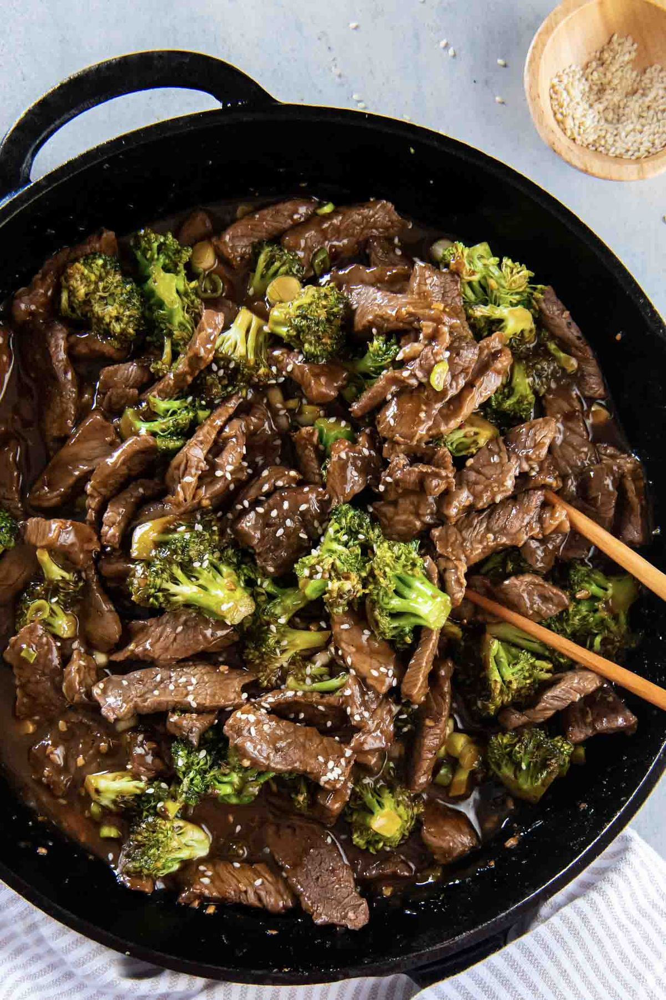

Beef and Broccoli

- Meal
- Dinner
- Serves
- 6
- Protein
- beef
- Cook
- stovetop · 25 min active / 30 min total · easy
- Make-ahead / leftovers
- no / yes
- Mediterranean
- yes
- WW tier
- moderate
- Status
- Trying out (probation)
Kristine's takeout-style beef and broccoli: thin-sliced steak and crisp-tender broccoli in a ginger-garlic soy sauce, 30 minutes start to finish. Uses olive oil, and she already lists brown rice.
Ingredients
Sauce
- 1/2 cup water
- 1/3 cup low-sodium soy sauce
- 3 Tbsp packed brown sugar
- 1 1/2 Tbsp rice vinegar
- 1 Tbsp toasted sesame oil
- 1 1/2 Tbsp minced fresh ginger
- 6 cloves garlic, minced
- 2 1/4 Tbsp cornstarch
- Pinch red pepper flakes, optional (adults)
Stir-fry
- 3 Tbsp olive oil, divided
- 1.5 lb broccoli, cut into small bite-size florets (6–7 cups)
- 2 lb flank, sirloin, or skirt steak, thinly sliced against the grain
- 1/3 tsp black pepper
- 6 green onions, chopped
- Brown rice, cooked, to serve (house rule: always brown)
- Sesame seeds, optional
Method
- Whisk all the sauce ingredients.
- Heat 1 1/2 Tbsp oil in a large skillet or wok over medium-high. Cook the broccoli 3–4 minutes, stirring, until crisp-tender. Move to a plate.
- Add the rest of the oil. Add the beef (two batches so it browns), sprinkle with pepper, and cook 2–3 minutes until browned on both sides.
- Return the broccoli, re-whisk the sauce, and pour it in. Cook ~2 minutes until thickened.
- Stir in green onions off the heat. Serve over brown rice with sesame seeds.
Notes
- Scaled ×1.5 from Kristine's 1.25 lb steak / serves 4 (rounded to 2 lb).
- Sirloin from Sam's is usually the cheapest tender option; partially freezing it for 20 minutes makes thin slicing easy.
- Red meat — counts toward the ≤2 red/processed cap. The fish-free grilled-steak love makes this a likely all-family hit.
- Mediterranean ✓ on 3 of 4 (olive oil, broccoli, brown rice); red meat is the miss. moderate.